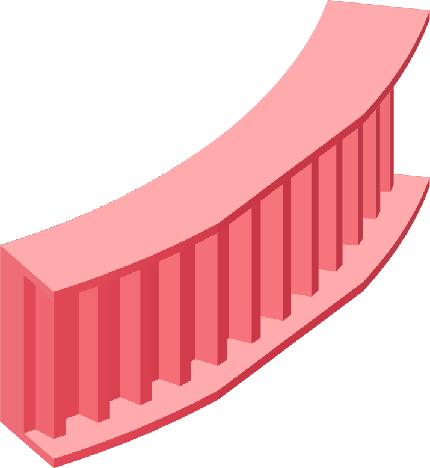

Print the coupon first
Twelve grooves and both flanges, off the same profile the turntable will use. It costs twenty minutes and it is the only thing standing between a bad tooth profile and a scrapped nine-hour print.

The profile
Polymaker Fiberon PET-GF15, dried, the project's PET-GF profile through the 0.4 mm nozzle: first layer at the print's own 280 °C and a +0.17 mm z-trim (hardware/printed-parts/z-trim.md).
Print the coupon flat. Do not change anything about the profile between the coupon and the turntable — that identity is the whole reason the coupon means something.
- Dry the spool. Load the PET-GF profile and confirm the z-trim is applied.
- Print weld-rotator-pulley-coupon.step flat, no support.
- Let it cool completely. Do not deburr the grooves.
- Take the delivered 550-5M-15 belt — the physical one, not a spare of a different brand — and press its teeth into the coupon by hand.
- Run a fingernail along both flanges and look down the row of twelve.
Every one of the twelve teeth seats to the groove root, and the belt's edges sit between both flanges without riding up either one. If the belt rides a flange, or if any tooth stands proud, stop. The turntable's 45 engaged teeth will accumulate that error over 142 mm of diameter. Fix the profile and print a second coupon.